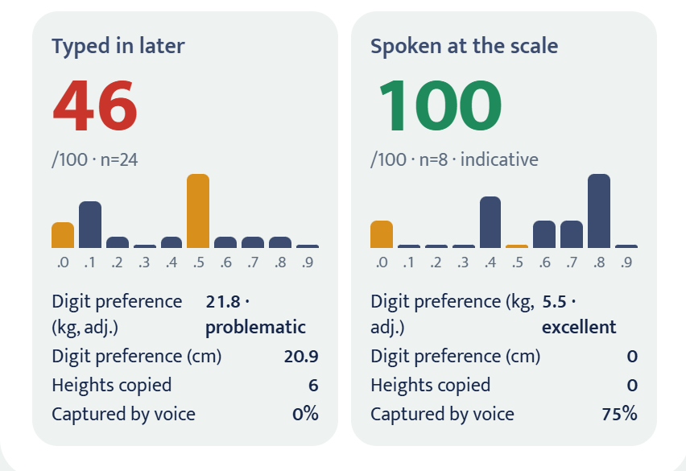
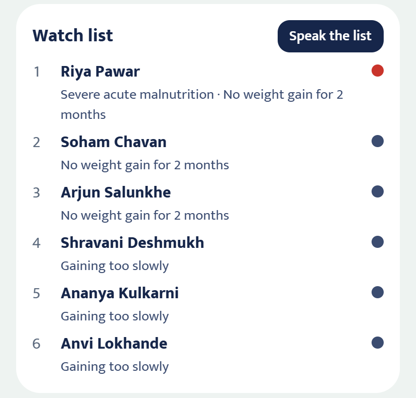

Healthcare access · Scaler × Wispr Flow · voice-first India · Round 2
28 or 82?
When an anganwadi worker types a child's height hours later, one swapped digit can mark a healthy child malnourished, or hide a malnourished one.
PoshanVaani lets her speak the reading while the child is still on the scale, and catches the mistake before it is saved.
Code: github.com/aithal007/poshanvaani · Live: aithal007.github.io/poshanvaani · Run: docker compose up (no keys needed) · Parikshith Aithal K V
2
Problem
Weighing day: the number exists only while her hands are full
Sunita runs an anganwadi in Nashik district. Once a month she weighs and measures every child under six: a squirming toddler on the scale, both hands on him, mothers waiting. She scribbles the numbers on paper and types each one into the Poshan Tracker app hours later, often at night.
- Typed later means typed wrong. Swapped digits (28 for 82) and lost decimals (92 for 9.2) turn healthy children into "SAM" cases and are hard to undo. Hindi tutorials on fixing wrong height and weight entries have 5 lakh+ views.
- Bad data hides real malnutrition. Poshan Tracker reported wasting 12 percentage points below the national NFHS-5 survey (2023 comparison).
- The burden is real. Tamil Nadu workers keep 16 registers and 2 apps and upload until 10 pm. A Madhya Pradesh directorate flagged "repeated counterfactual data".
13.1 lakh
anganwadi workers in position
6.3 crore
children growth-monitored every month
33 lakh
severely wasted children (NFHS-6 rate applied): the ones bad data hides
Sources: PIB Poshan Tracker factsheet (Jul 2026); MWCD sanctioned/vacant posts; The Wire (Poshan Tracker vs NFHS-5, 2023); ThePrint and Behan Box (Tamil Nadu, 2025-26); Free Press Journal (MP WCD); YouTube search of Poshan Tracker tutorials (Nov 2026); NFHS-6 (2023-24).
3
Solution: one spoken sentence per child
She speaks. It checks. Only "ho" saves.
- Riya, saha point saha kilo, chauhattar centimetre: Marathi, Hindi, English or any mix, with digits or words. MUAC and paayala sooj (oedema) are understood too.
- Two Riyas on the roster, so it asks Riya Pawar or Riya Shinde?. She says Pawar.
- It checks the reading against last month and WHO growth limits before saving. For 28 cm it asks Last month 80.6. Now 28? Did you mean 82?
- Read-back states the meaning: 6.6 kilo, 74 cm. Down 600 grams. Correct?. ho saves; nahi, 6.8 kilo fixes one field.
- WHO z-scores, then a spoken alert: Severe acute malnutrition. Added to the referral list. The referral slip and a message for the mother are ready to send on WhatsApp.
- Saved offline with the transcript and a 3-second audio clip. kon baaki aahe? names who is left.

4
What makes it different
Other tools record what she says. PoshanVaani catches what she mis-said.
| Typed app today
(Poshan Tracker) | Voice-to-form bots
(ASHA hackathon tools) | General dictation
(speech to text) | PoshanVaani |
|---|
| Captured hands-free, at the scale | No, typed later | Yes | Yes | Yes, one sentence |
| Wrong number caught before saving (digit swap, lost decimal, vs last month) | No | Rarely | No | Yes, asks "did you mean 82?" |
| Marathi/Hindi number words, code-mixed ("saade nau kilo") | No | Partly (LLM) | Transcribes only | 880+ forms, deterministic |
| WHO SAM/MAM from WHZ, MUAC and oedema, spoken alert | Computed, silent | Varies | No | Yes, India 2023 protocol |
| Data honesty score (WHO/SMART digit-preference checks) | No | No | No | Yes: typed 46 vs spoken 100 |
| Growth-faltering watch list, before a child becomes SAM | No | No | No | Yes, spoken on request |
| Personal message for the mother after each reading | No | No | No | Yes, Marathi/Hindi, WhatsApp |
| Runs with no API key; readings stored offline | Needs network | Usually cloud LLM | Cloud | Yes |
Comparison from public descriptions of Poshan Tracker (PIB) and 2025-26 GitHub/Devfolio voice-to-form projects for ASHA workers. Searches found no voice growth-monitoring tool for anganwadis and no fabrication check on Poshan Tracker data.
5
How it is built
Every clinical decision runs on her phone; the network is optional
Figure 1. System architecture. Speech arrives through a provider interface: Chrome Web Speech (free, the default), Sarvam Saaras (optional key) or the keypad. A state-machine engine passes each transcript through deterministic, unit-tested modules: the number parser, name matcher, plausibility check, WHO LMS z-scores, watch list and honesty score. Confirmed readings go to IndexedDB with the transcript, audio and timing, and sync when online. The server is a zero-dependency Node process: docker compose up, port 8080, "key not set" without keys. No LLM makes decisions; 101 tests.
6
Workflow
One sentence, ten steps: speech in, referral out
Figure 2. Utterance pipeline, with the real values from the demo. Steps 1-4 turn audio into numbers and a child: N-best transcripts, Devanagari and romanised normalisation, 880+ Marathi and Hindi number forms (verified against LibreOffice's number tables), and phonetic roster matching. Steps 5-6 are the safety layer: a plausibility check against last month and WHO growth velocity, then a read-back that states the change. Steps 7-10: WHO LMS z-scores, India's 2023 SAM/MAM protocol, the spoken alert, referral and family message, and offline storage.
7
Noise, accents, mixed languages, misheard input
No path saves a number she did not hear and confirm
Figure 3. Conversation state machine. Accents and names: phonetic keys match रिया पवार = Riya Pawar = Reeya Powar, and the recogniser's alternative transcripts are tried. Mixed language: digits, Devanagari and romanised words parse the same way. Misheard numbers: each gets one short spoken question; an unusual but true value needs a second "ho" and is flagged for the supervisor. Noise: nothing saves without confirmation, and two misses open the keypad, whose values pass the same checks.
8
Because the data is spoken, it can be trusted and acted on
Three things a typed form cannot do
For the supervisorData honesty score
WHO/UNICEF and SMART data-quality checks: digit preference (bias-adjusted for small centres), copied heights, duplicates and impossible z-scores. Numbers typed later pile up on .0 and .5. Demo centre: typed register 46/100, spoken readings 100/100. Every voice reading records when and how it was captured.

For the childFaltering watch list
Trajectory rules (the last 2-4 months predict malnutrition best, per Dimagi and the American India Foundation on anganwadi data): flat weight for 2 months, WHZ sliding toward −2, or gain far below WHO norms. Riya was flagged "sliding" a month before her reading showed SAM. Speak the list reads it aloud.

For the motherA message about her child
After each reading, a short Marathi or Hindi message, played aloud or sent on WhatsApp:
नमस्कार सुनीलजी. आज रियाचे वजन 6.6 किलो आहे. मागच्या महिन्यापेक्षा 600 ग्रॅम कमी झाले. गुरुवारी रियाला अंगणवाडीत घेऊन या…
Generic broadcast messages (the Kilkari RCT) showed weak effects on nutrition. This one is about this child and this reading, with one action.
9
Addressable market
Every state already pays for the phone and the data. We make the data true.
Users (verified)
- 14 lakh anganwadi centres, 13.1 lakh workers, 41,000 supervisors
- 10.3 lakh ASHAs: the next segment
- 5M+ community health workers worldwide, 1.06M in Africa
Market size estimate
- TAM ₹158-316 cr/yr: 26 lakh Indian frontline workers × ₹50-100/month
- SAM ₹42-84 cr/yr: about 7 lakh AWWs in Hindi and Marathi states
- SOM ₹9-18 cr ARR in 3 years: Maharashtra and MP
Budget fit
- Poshan 2.0 budget ₹21,960 cr (FY25-26 BE). A full rollout at ₹1,200/yr is about 0.7% of it.
- States already pay ₹2,000/yr per worker for mobile data.
- Benchmark: CommCare ≈ ₹170 per user per month.
Value estimate: saving 10-20 hours of data work a month at about ₹67/hour is worth ₹1,050-2,100 cr/yr across all workers. The larger value is the about 33 lakh severely wasted children who can be found earlier.
Sources: Lok Sabha AU2416 (Aug 2025); Rajya Sabha PQ 267 (Mar 2025); MWCD vacancy letter; PIB (Jan 2025, Jul 2026); India Budget EB 101 FY25-26; CommCare pricing; Africa CDC (2026); NFHS-6. Price and hours saved are pilot assumptions.
10
Third-party dependencies and go-to-market
If any service gets costly or stops, the checks still work
| Dependency | Cost | If it gets costly or stops |
|---|
| Chrome Web Speech (STT) | Free, no key | Switch to Sarvam in Settings, or the keypad. All logic is local. |
| Sarvam Saaras / Bulbul (optional) | ₹0.49/min ≈ ₹10-15 per worker/month | Falls back to browser speech. One provider interface, so Bhashini or on-device can be swapped in. |
| Browser speech synthesis | Free | Every reply is also on screen in large text. |
| WhatsApp (share link) | Free | Read aloud at the centre; SMS. The Business API (Round 3) is priced per conversation. |
| Poshan Tracker | — | No public API, so we export CSV in its entry shape until a state integrates. |
Go-to-market
- Months 0-3: a 20-centre block pilot with a CDPO and a nutrition NGO. 30-minute training at the monthly sector meeting. Measure minutes saved, errors against supervisor re-measurement, and SAM cases caught.
- Months 3-9: district rollout on CSR funding; supervisor sector view; 2 more languages.
- Months 9-18: state WCD MoU as technical partner (the Khushi Baby route), register as a Digital Public Good, and offer a voice module for Poshan Tracker.
- Buyer and price: state WCD department, about ₹75 per worker per month. Open source, so no lock-in.
11
Her hands on the child. Her voice on the app.
Working today
- Voice entry of weight, height, MUAC and oedema in Marathi, Hindi and English
- Read-back, digit-swap catch, WHO SAM/MAM, spoken alert, referral, family message
- Honesty score, watch list, typing-vs-voice stopwatch; offline storage, CSV
docker compose up with no keys · 101 tests · live demo
By the finale (Round 3)
- Field test with anganwadi workers: real Marathi recordings, measured minutes saved
- Supervisor sector view across 20-25 centres
- Mother asks by WhatsApp voice note and hears her child's status
- On-device speech for fully offline voice
How we will know it works: in a 100-vs-100-centre pilot, 95% of entries within 0.1 kg / 0.5 cm on re-measurement, 80% fewer correction requests, and days from first weight loss to referral cut from about 30 to under 7.
github.com/aithal007/poshanvaani · aithal007.github.io/poshanvaani · Synthetic child data only; no real children filmed or stored.